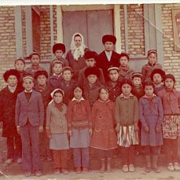
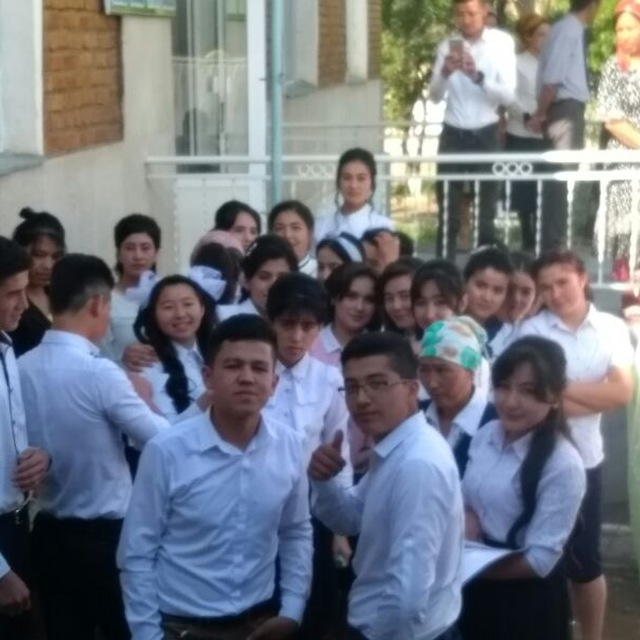
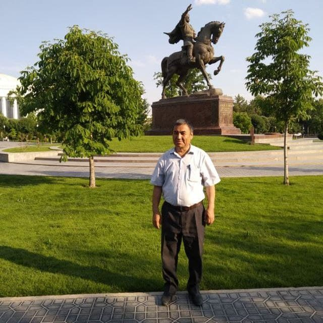

Qishlog`imizning asosiy yutug`i ta`lim sifatida!
Qishlog`imizda 1 ta umumiy oʻrta taʼlim maktabi faoliyat koʻrsatadi va yana 150 kishiga mo`ljallangan yangi maktab qurilish ishlari davom etmoqda. Hozirgi kunda maktabda 400 ga yaqin oʻquvchilar tahsil olmoqda. Maktab guldirovliklarning faxri, gʻururi hisoblanadi, chunki maktabni bitirib oliy maʼlumot egasi boʻlganlar hozir 400 dan ortiq kishini tashkil etadi. Bu aholining umumiy soniga nisbatan kattagina foizni tashkil qiladi. Guldirovlik yoshlarda ilm olishga va oliy oʻquv yurtlarida oʻqishga havas juda yuqori. Har yili 15-20 ta guldirovlik yoshlar turli oliy oʻquv dargohlariga oʻqishga kiradilar. Hozirgi vaqtda ham respublikamizning oliy oʻquv yurtlarida 35 ga yaqin guldirovlik yoshlar tahsil olmoqdalar. Ular orasida Jizzax oliy aviatsiya bilim yurtida, Toshkent yuridik universitetida, Hadichai kubro bilim yurtida, Toshkent rassomchilik va dizayn institutining haykaltaroshlik fakultetida, Toshkent davlat islom universitetida, Toshkent tibbiyot akademiyasida, Toshkent davlat pediatriya instituti, Toshkent davlat farmatsevtika instituti, Rossiyaning Arxangelsk shahridagi Shimoliy Arktika Federal universiteti, shuningdek Xitoy xalq Respublikasining nufuzli oliy oʻquv yurtlarida va Erasmus grandini yutib Yevropaning turli universitetlarida oʻqiyotgan talabalar borligi kishini quvontiradi.
Qishlog`imizdagi asosiy yutuqlar ta`lim va sport bilan bog`liq. Maktabimizning juda ko`plab o`quvchilari tuman, viloyat va xatto respublika miqyosidagi fan olimpiadalari va sport musobaqalarida munosib qatnashib
kelishadi. Masalan, Yoqubjonova Mohizoda “Soliq bilimlari bolalarga” ko`rik tanlovida tuman bosqichida 1- o`rinni va viloyat bosqichida faxrli 3- o`rinni qo`lga kiritgan va hozirda Namangan Davlat Universiteti
qoshidagi akademik litseyida o`qiydi. Bundan tashqari, o`z vaqtida Yoqubjonov Hayitmirzo Tasviriy san`at va haykaltaroshlik bo`yicha tuman va viloyat bosqichlarida o`z tengqurlariga imkon bermay, sovrinli
o`rinlarni olib kelgan. Hayitmirzo birinchi prezidentimiz Islom Karimovning haykallarining qurilish jarayonlarida qatnashgan. Ushbu ta`riflarni qishlog`imizning yana bir iqtidorli vakili Otamirzayev Hikmatilloga
ham bersak bo`ladi. Hikmatilloning yuqori natijalari qishlog`imizdagi boshqa bolalarga ham motivatsiya bergan deb bemalol ayta olaman. Bundan tashqari qishlog`imizda sportning shaxmat turi ham anchagina ommalashgan. Jumladan, Qishlog`imizdagi iqtidorli aka- uka Teshaboyev Sultonmurod va Salohiddinlar ushbu sport turidan tuman
va viloyat bosqichlarida doimiy yuqori o`rinlarni olib kelishadi. Umuman olganda Guldirovlik mutaxassislardan 6 kishi turli oliy oʻquv yurti va ilmiy tekshirish institutlarida faoliyat koʻrsatmoqda. Magistraturani tamomlagan 2 ta mutaxassis esa doktoranturada tahsil olmoqda. Shuningdek qishloq vakillari Rossiya, Belorusiya, Buyuk Britaniya, Yaponiya, Amerika Qoʻshma Shtatlari,
Shvetsiya, Belgiya, Kanada kabi dunyoning rivojlangan mamlakatlarida taʼlim olib, tajriba almashib turli jabhalarda yurtimiz taraqqiyotiga oʻzlarining munosib hissalarini qoʻshishmoqda.
Maktabimiz hayotidan fotolavhalar




.jpg)

Qishlog`imizning faxrli insonlari

Mo`minjon Sulaymonov
NamDU katta o`qituvchisi
1962-yil 25-yanvarda Guldirov qishlog`ida tug`ilgan. Maktabni bitirib Nizomiy nomidadi Toshkent Davlat Pedagogika universitetining Filologiya fakultetiga o`qishga kirdi. Qishlog`imiz rivoji uchun o`zining katta hissasini qo`shgan inson. Filologiya fanlari nomzodi.
Bozarov Abdulvohid
1974 yil 21-martda Namangan viloyati Chortoq tumani Guldirov qishlog'ida tug'ildi.
Maktabni tamomlab Namangan Davlat Universiteti Fizika-Matematika fakultetiga o'qishga kirdi. 2001-
yilda Toshkentdagi Kibernetika institutiga aspirant bo'lib qabul qilindi. 2003- yilda Yaponiyaning Waseda universiteti magistranti bo`ldi.


Qishlog`imizning faxrli insonlari

Mo`minjon Sulaymonov
NamDU katta o`qituvchisi
1962-yil 25-yanvarda Guldirov qishlog`ida tug`ilgan. Maktabni bitirib Nizomiy nomidadi Toshkent Davlat Pedagogika universitetining Filologiya fakultetiga o`qishga kirdi. Qishlog`imiz rivoji uchun o`zining katta hissasini qo`shgan inson. Filologiya fanlari nomzodi.
Bozarov Abdulvohid
1974 yil 21-martda Namangan viloyati Chortoq tumani Guldirov qishlog'ida tug'ildi.
Maktabni tamomlab Namangan Davlat Universiteti Fizika-Matematika fakultetiga o'qishga kirdi. 2001-
yilda Toshkentdagi Kibernetika institutiga aspirant bo'lib qabul qilindi. 2003- yilda Yaponiyaning Waseda universiteti magistranti bo`ldi.